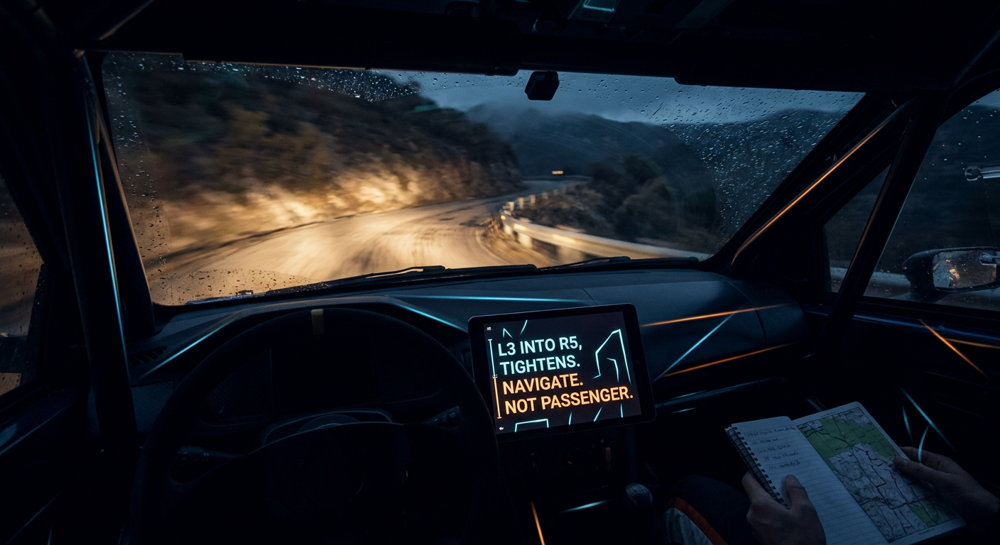

Pace notes

In rally racing, the co-driver reads pace notes to the driver at inhuman speed: "Left four, tightens, don't cut, right two over crest." The driver can't see past the crest. The co-driver can't steer. Together, they go flat out on a road neither could take alone.
Nobody hands you pace notes for a career. You write them yourself, from watching how the best operators work, and from the scar tissue of getting it wrong. These are mine. Six notes for the road.

SpaceX blows up rockets on purpose. Not because they're careless, but because every explosion is a data point. The Starship program iterates at a pace that makes traditional aerospace look glacial, because they treat each failure as tuition paid in full.
The real skill is knowing where failure is cheap, and moving your failures there. Fail in a sketch before a prototype. Fail in a prototype before production. Fail in front of one reviewer before a customer. Some decisions are two-way doors: try it, measure it, reverse it. Move fast on those. Others are one-way: a public commitment, a shipped product, a promise. Slow down on those.
The first mistake is tuition. The second is a choice.

Steve Jobs dropped out of college and sat in on a calligraphy class. Zero career value. Zero ROI. Years later, it became the reason the Macintosh had beautiful typography. He connected dots nobody else could because he wandered into rooms nobody else bothered with.
When everyone around you is learning the same things, building the same projects, reading the same posts, you're racing on a crowded track. The edge comes from curiosity that takes you somewhere nobody else went. With AI, a working prototype can take an evening. The barrier to exploring a weird idea isn't skill anymore. It's willingness.
Don't just do what your peers are doing. Do what they aren't brave enough to try.
Jensen Huang built NVIDIA with a flat org: roughly forty direct reports, no layers of middle management filtering reality. The expectation? Everyone owns their domain completely. You own it, you run it, you answer for it.
One person waits to be told what to do. Another sees what needs doing and does it. That's the whole gap, and it has nothing to do with seniority. When something is broken and nobody's assigned, fix it. When a process is outdated, update it. When the room needs a decision, speak.
Early in your career, ownership means owning your project end to end. Later, it means owning outcomes, not tasks. A task is done when it's closed. An outcome is done when the problem is gone.
The brilliant jerk archetype: exceptional work, but everyone around them feels small. Teams tolerate them because they deliver. They also leave a trail of people quietly updating their resumes.
Helpfulness compounds faster than brilliance. The person who stays to help a teammate through a hard problem. The one who explains a concept instead of just fixing it. These people build something raw talent can't replicate: trust. Trust gets you into the important rooms. Not because you're the smartest, but because you make the room better.
Tech is a smaller world than it looks. The intern you helped today might be reading your resume a few years from now. Your reputation travels further than your work.
The config change that broke production. The migration that corrupted a table. The email that went to the entire company. Everyone's been there. Mistakes aren't optional, they're structural.
The instinct is to go quiet, fix it on the side, or point at someone else. That instinct is the fastest way to lose trust. The alternative fits in three sentences: "That was me. Here's what happened. Here's what I'm doing so it doesn't happen again."
If you're interviewing and someone asks about a mistake, they're not grading the mistake. They're listening for the sentence after it. "It was the other team's fault" ends the conversation. "Here's what I changed afterwards" starts a good one.
To err is human. Owning it is how you grow.
There's a temptation in any career to optimize for metrics. Promotions per year. Salary jumps. Title inflation. LinkedIn impressions. The score.
Playing the score makes you fragile. You pick projects for visibility instead of interest. You dodge risky bets. You stop learning and start performing.
The iPod wasn't born from a spreadsheet. It was born from someone who cared about the experience of listening to music more than hitting revenue targets. Jobs was obsessed with the craft. The score followed.
Do work you're proud of. Solve problems that genuinely excite you. The scoreboard updates on its own.

If you've ever watched rally racing, you know the driver doesn't win alone. There's a co-driver in the passenger seat reading pace notes at inhuman speed: "Left four, tightens, don't cut, right two over crest, sixty, left three into hairpin." The driver's hands are on the wheel, but the navigator is the reason they don't fly off a cliff.
That's what good team members do. They don't ride along. They navigate. They call out risks and flag the next corner before the team hits it.
Good calls are like good pace notes: early, because a warning after the corner is just commentary. Specific, because "p99 latency doubles past five thousand requests" beats "I'm worried about performance." And calm, because a calm call gets acted on while a panicked one gets argued with.
Dead weight in a rally car doesn't just slow you down. It gets everyone off the road. Fresh eyes often catch what everyone else stopped noticing. You don't need seniority to call a corner. You just need to have seen it.
Before a rally, crews drive each stage slowly. It's called the recce, and it's when the pace notes get written, so that at full speed nobody's guessing what's over the crest.
Fail fast, somewhere cheap, and never the same way twice. Own mistakes early and out loud. Grab the wheel before you're asked. Help without keeping score. Play the game, not the scoreboard. Call the corners.
Read them while it's slow. You'll want them at speed.